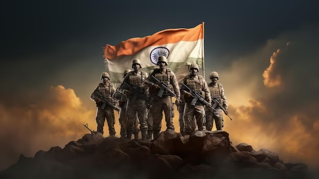
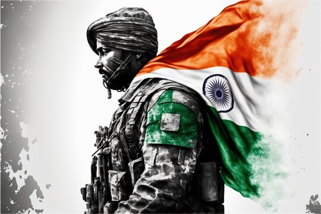
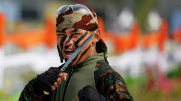
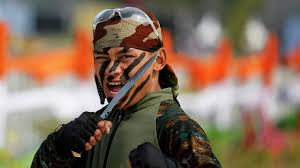

INDIAN ARMY

The Indian Army is the land-based branch and largest component of the Indian Armed Forces. The President of India is the Supreme Commander of the Indian Army, and its professional head is the Chief of Army Staff (COAS). The Indian Army was established on 1 April 1895 alongside the long established presidency armies of the East India Company, which too were absorbed into it in 1903. Some princely states maintained their own armies which formed the Imperial Service Troops which, along with the Indian Army formed the land component of the Armed Forces of the Crown of India, responsible for the defence of the Indian Empire. The Imperial Service Troops were merged into the Indian Army after independence. The units and regiments of the Indian Army have diverse histories and have participated in several battles and campaigns around the world, earning many battle and theatre honours before and after Independence.
The primary mission of the Indian Army is to ensure national security and national unity, to defend the nation from external aggression and internal threats, and to maintain peace and security within its borders. It conducts humanitarian rescue operations during natural calamities and other disturbances, such as Operation Surya Hope, and can also be requisitioned by the government to cope with internal threats. It is a major component of national power, alongside the Indian Navy and the Indian Air Force. The army has been involved in four wars with neighbouring Pakistan, one with China and one with Afghanistan. Other major operations undertaken by the army include Operation Vijay, Operation Meghdoot, and Operation Cactus. The army has conducted large peacetime exercises such as Operation Brasstacks and Exercise Shoorveer, and it has also been an active participant in numerous United Nations peacekeeping missions. The Indian Army was a major force in the First and Second World Wars, particularly in the Western Front and the Middle Eastern theatre during World War I, and the South-East Asian Theatre and the East African and North African campaigns during World War II.
 

The Indian Army is operationally and geographically divided into seven commands, with the basic field formation being a division. Below the division level are permanent regiments that are responsible for their own recruiting and training. The army is an all-volunteer force and comprises more than 80% of the country's active defence personnel. It is the largest standing army in the world, with 1,237,117 active troops and 960,000 reserve troops. The army has embarked on an infantry modernisation program known as Futuristic Infantry Soldier As a System (F-INSAS), and is also upgrading and acquiring new assets for its armoured, artillery, and aviation branches.
Until the independence of India, the "Indian Army" was a British-commanded force defined as "the force recruited locally and permanently based in India, together with its expatriate British officers";[16] the "British Army in India" referred to British Army units posted to India for a tour of duty. The "Army of India" meant the combined Indian Army and the British Army in India.
.png)